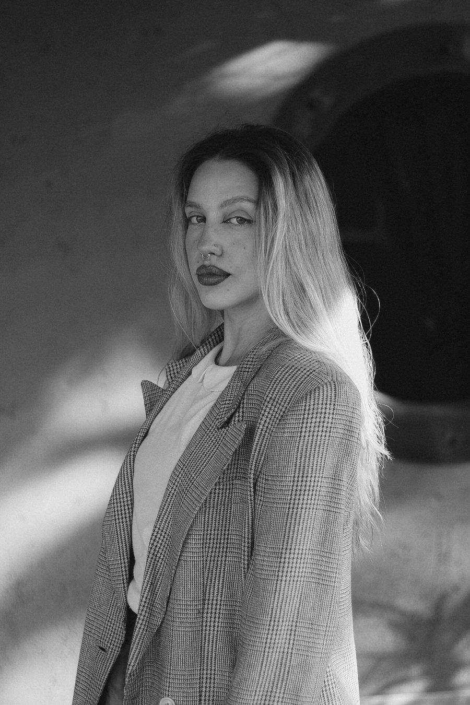

Portfólio
identidade · editorial · ilustração — ver. 2026

Olá! Eu sou
a Laura.
Trabalho do começo: entendo o negócio, encontro a palavra certa e só então desenho. Gosto de projetos que chegam com um problema mal formulado — é aí que a coisa fica boa.
Este site está em construção. Assim que os projetos forem enviados, cada um ganha sua própria seção lá embaixo, no índice.
Formação
Design Gráfico
Instituição · ano — ano
Habilidades
Identidade visual
Editorial
UI / Produto digital
Ferramentas
Illustrator · Photoshop
Figma · InDesign
Conteúdo.
tudo que tem por aquiProjeto A.
aguardando conteúdo — bloco-modeloEste é um bloco-modelo. Quando o projeto real chegar, substitua este texto pela descrição: o desafio, a ideia e a solução em 2–3 frases curtas.
Projeto B.
aguardando conteúdo — bloco-modeloDuplique este bloco <section class="pagina"> para cada projeto novo. Troque nome, categorias, texto e imagens — veja o README para o passo a passo.
Assim que os próximos trabalhos forem enviados, eles entram aqui — cada um com seu título, categorias e grade de imagens.